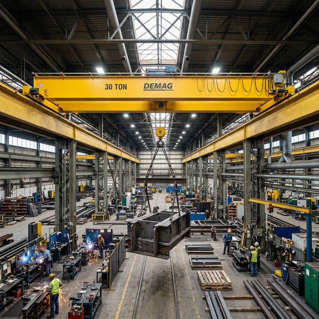
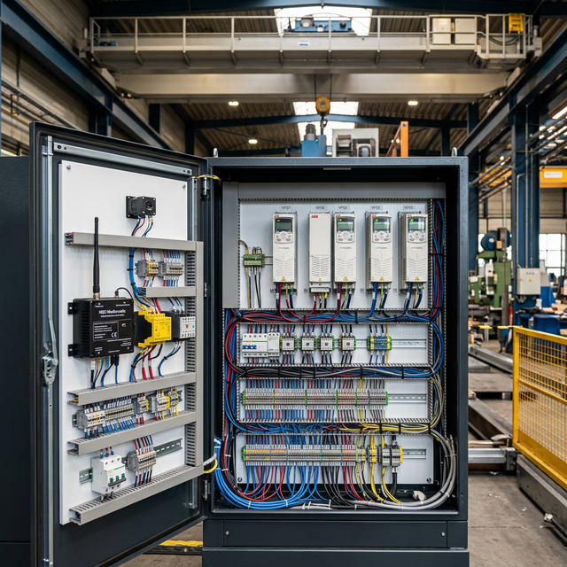

How to Select, Modernize, or Upgrade Your Overhead Crane System for Long-Term Operational Efficiency
An overhead crane is one of the most significant capital investments an industrial operation will make. A well-specified crane system enhances throughput, improves worker safety, and delivers reliable service for 20–30 years or more. A poorly selected system, conversely, creates bottlenecks, increases maintenance costs, and may require premature replacement — turning a capital asset into a capital liability.
Whether you are specifying a new crane installation, evaluating whether your existing system can be modernised, or considering a full replacement, the decision framework must extend beyond initial purchase price. This guide provides a structured approach to crane system decisions that considers total cost of ownership, operational requirements, and long-term strategic value.
When to Replace vs When to Modernize
This is often the first — and most consequential — decision an operations manager faces. The answer depends on the specific condition and requirements of your installation:
Consider full replacement when:
- Structural fatigue is present: Cracking in main girders, runway beams, or end trucks indicates the crane has reached or exceeded its design fatigue life. Structural fatigue cannot be reversed — only managed until replacement.
- The duty class is insufficient: If your operational demands have grown beyond the crane's original design parameters (e.g., a CMAA Class B crane being used in a Class D application), the crane is being systematically overloaded regardless of individual lift weights.
- Major component obsolescence: When motors, drives, or controls can no longer be sourced or supported, the crane becomes an operational risk. Each breakdown extends in duration as technicians source increasingly scarce parts.
Modernization is typically the better investment when:
- The structure is sound: If the bridge, trolley frame, and runway remain in good structural condition, replacing controls, motors, and drives delivers 80% of the benefit of a new crane at 40–60% of the cost.
- Controls are outdated: Replacing contactor-based controls with modern variable frequency drives (VFDs) transforms crane performance: smoother starts and stops, reduced shock loading, and significantly improved energy efficiency.
- Safety systems need upgrading: Adding modern overload protection, anti-collision systems, or radio remote controls can bring an older crane up to current safety standards.
- Ergonomic improvements are needed: Upgrading from pendant control to radio remote control eliminates the need for operators to walk with the load, reducing fatigue and improving safety.
The most expensive crane is not the one with the highest purchase price — it is the one that fails to meet operational requirements, creating hidden costs in downtime, inefficiency, and workarounds.
Zentro Projects Engineering Team
Key Factors When Selecting a New Overhead Crane
Specifying a new crane requires careful analysis across multiple technical dimensions. Getting any one of these factors wrong can result in a system that underperforms from day one:
- Load capacity: Define not just the maximum lift weight, but the typical working load. Specifying a 20-tonne crane for a process that rarely exceeds 5 tonnes adds unnecessary cost and structural requirements.
- Span length: The distance between runway rails. This determines the girder design, deflection characteristics, and ultimately the crane's precision and stability under load.
- Lift height: Total hook travel required, measured from lowest hook position to highest. Consider below-the-hook equipment (spreader bars, grab buckets) that reduce effective lift height.
- Duty classification (CMAA): This is critical. CMAA classes range from A (standby/infrequent use) to F (continuous severe service). The classification drives the design of every structural and mechanical component.
- Operating speed requirements: Hoist, bridge, and trolley speeds must match operational needs. High-speed operations require different motor and drive specifications than precision-positioning applications.
- Environmental conditions: Temperature extremes, corrosive atmospheres, dust, humidity, and outdoor exposure all influence material selection, electrical enclosure ratings, and lubrication requirements.
- Power supply: Available voltage, phase configuration, and power capacity at the installation site determine motor and drive specifications.
Crane System Types: Choosing the Right Configuration
Each crane configuration suits different applications. Understanding the strengths and limitations of each type is essential for correct specification:
- Single girder cranes: Cost-effective for light to medium duty applications up to approximately 20 tonnes. Lower headroom requirements and reduced building structural demands make them ideal for retrofits and facilities with limited vertical space.
- Double girder cranes: Essential for heavier capacities, higher duty classifications, and applications requiring maximum hook height. The trolley rides on top of the girders, providing greater lift height and the ability to accommodate auxiliary hoists.
- Gantry cranes: Free-standing structures that do not require building columns for support. Ideal for outdoor applications, temporary installations, and buildings not designed to support overhead crane loads.
- Jib cranes: Floor-mounted or wall-mounted cranes with a rotating arm. Excellent for individual workstations, supplementing overhead cranes for lighter loads at specific locations.
- Under-running vs top-running: Under-running cranes are suspended from the lower flange of runway beams, minimising headroom requirements. Top-running cranes offer greater capacity and stability for heavier-duty applications.


Modernization Opportunities That Improve ROI
For existing crane systems with sound structures, targeted modernisation delivers exceptional return on investment. The most impactful upgrades include:
- Variable frequency drives (VFDs): Replace contactor-based motor controls with VFDs for infinitely adjustable speed, smooth acceleration and deceleration, reduced mechanical shock, and energy savings of 20–40%. VFDs also extend the life of mechanical components by eliminating jarring starts and stops.
- Radio remote controls: Free operators from pendant control cords, enabling them to position themselves at the safest vantage point for each lift. Modern radio systems include customisable button layouts, multiple frequency channels, and emergency stop functionality.
- Anti-sway systems: Electronic systems that automatically dampen load swing during crane travel. These dramatically improve positioning precision, reduce cycle times, and decrease the risk of load collision with surrounding structures or personnel.
- Smart diagnostics: Retrofit monitoring systems that track operating hours, load cycles, motor temperature, brake wear, and overload events. This data enables predictive maintenance strategies that reduce unplanned downtime.
- Energy-efficient motors: IE3 or IE4 class motors that reduce energy consumption while delivering equivalent or improved performance. Combined with VFDs, energy savings can exceed 40% compared to legacy systems.
Total Cost of Ownership Analysis
Evaluating crane investments solely on purchase price leads to poor decisions. A comprehensive total cost of ownership (TCO) analysis includes:
- Initial capital cost: Purchase price of the crane, including engineering, manufacturing, and delivery.
- Installation cost: Site preparation, runway construction or modification, electrical connections, and commissioning. This can represent 30–50% of the total project cost.
- Annual maintenance cost: Scheduled preventive maintenance, consumable components, and technician time. Typically 2–5% of replacement value annually.
- Downtime risk cost: Expected frequency and duration of breakdowns, multiplied by the hourly cost of production stoppage. This is often the largest hidden cost element.
- Energy consumption: Annual electricity cost for crane operation. Modern VFD-driven cranes consume 20–40% less energy than legacy systems.
- Residual value: The crane's value at end of planned service life, influenced by maintenance history and component condition.
When modelled over a 15–20 year lifecycle, a higher-quality crane with lower maintenance requirements and better energy efficiency frequently outperforms a lower-cost alternative, even when initial capital costs are 20–30% higher.
Procurement Best Practices
Selecting the right vendor is as important as selecting the right crane. Key procurement considerations include:
- Technical expertise: Ensure the supplier has engineering capability to design systems for your specific application, not just supply catalogue products.
- Compliance verification: Confirm the supplier adheres to applicable standards including SANS, EN, and CMAA design standards. Request design calculations and material certificates.
- Installation capability: Evaluate whether the supplier has the capability to manage the full installation, including civil works coordination, electrical connections, and commissioning.
- After-sales support: Assess the supplier's breakdown response capability, spare parts availability, and maintenance programme offerings. A crane is a 20+ year relationship, not a one-time purchase.
- Warranty terms: Understand warranty coverage, exclusions, and the supplier's track record of honouring warranty claims. A generous warranty from an unreliable supplier has no value.
Frequently Asked Questions
How long does a typical overhead crane last?
With proper maintenance, overhead cranes typically operate for 20–35 years. The actual
lifespan depends on duty classification, operating environment, and maintenance quality.
Well-maintained cranes can exceed 40 years of service with periodic component
replacements.
Is it worth modernizing an old crane or should I replace it?
If the crane's structure (girders, end trucks, runway) is sound, modernization typically
delivers 80% of the performance improvement of a new crane at 40–60% of the cost.
However, if structural fatigue or significant obsolescence is present, replacement is
the better long-term investment.
What is CMAA duty classification and why does it matter?
CMAA (Crane Manufacturers Association of America) classes range from A (standby) to F
(continuous severe). The classification determines the design life of every component.
Operating a crane above its rated class dramatically accelerates fatigue and increases
failure risk.
How do I determine the right crane capacity?
Consider the maximum individual lift weight plus below-the-hook equipment weight, then
add a safety margin. Also consider future capacity needs — it is far more cost-effective
to install slightly more capacity initially than to replace an undersized crane later.
Let Zentro Projects Guide Your Crane Investment
At Zentro Projects, we take a consultative approach to every crane project. Whether you need a site assessment to determine the optimal crane configuration, a condition assessment of your existing fleet to evaluate modernization opportunities, or a complete turnkey installation from specification through commissioning, our engineering team delivers solutions tailored to your operational and financial requirements.
We manufacture single girder and double girder cranes, supply hoisting equipment and lifting accessories, and provide comprehensive upgrade services. Contact us today for a no-obligation consultation and discover how the right crane system decision can transform your operational efficiency.